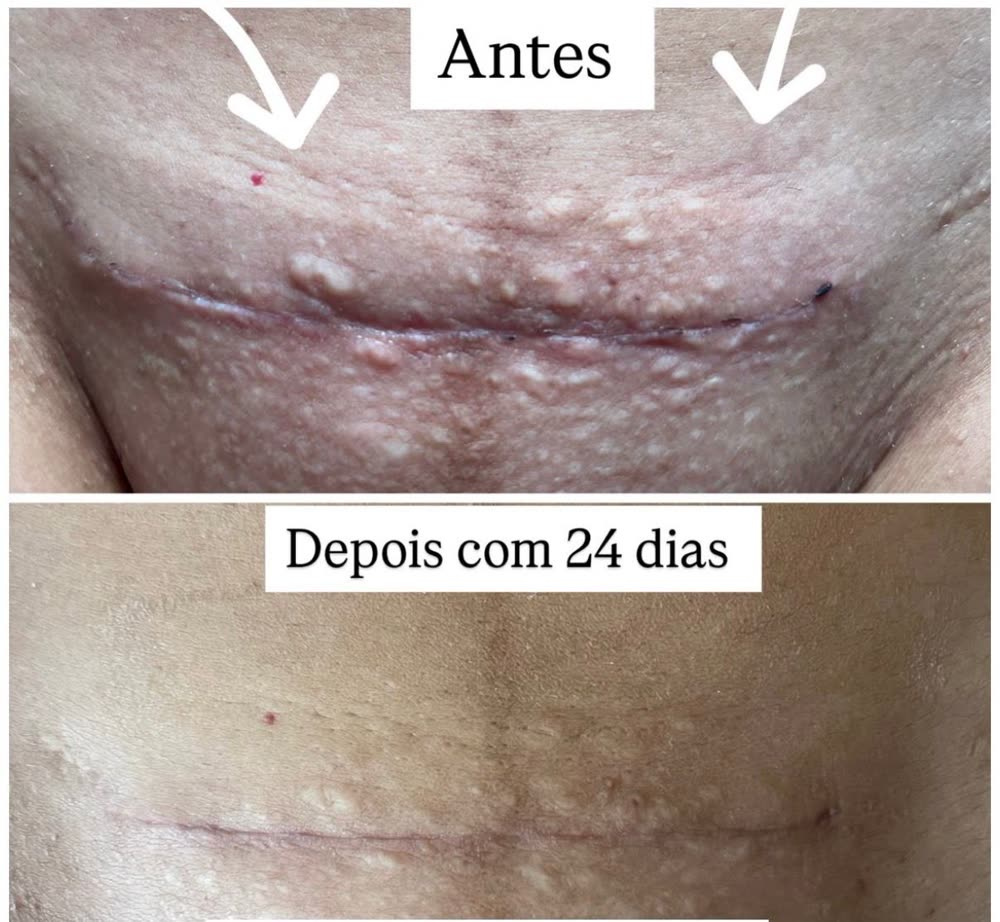
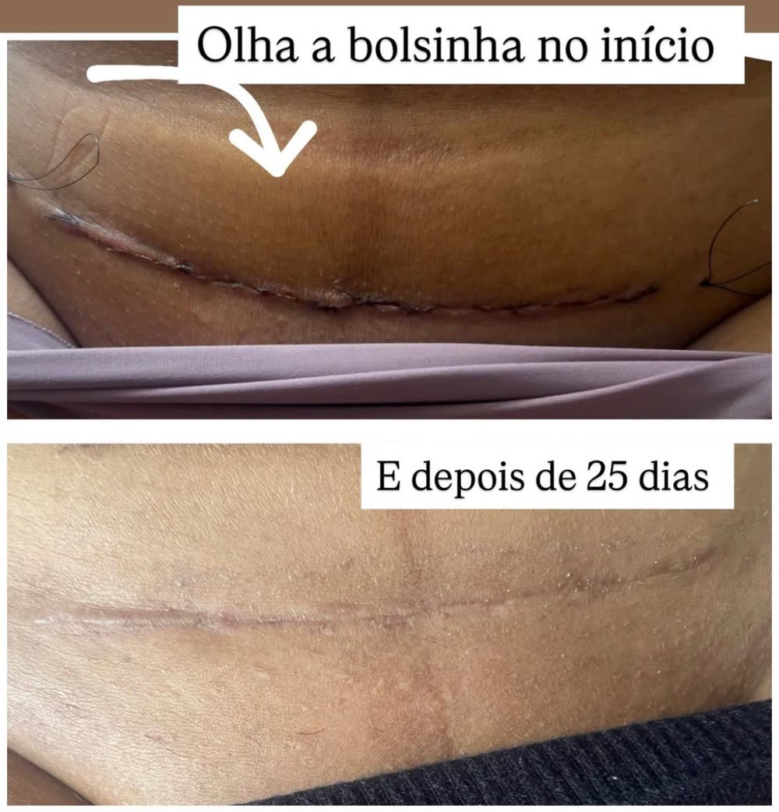
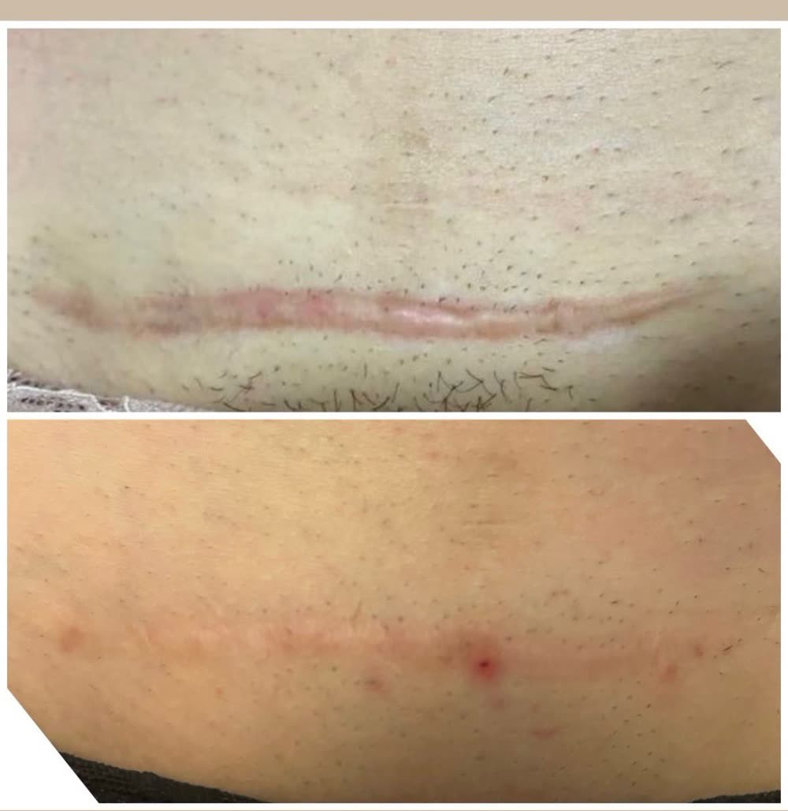
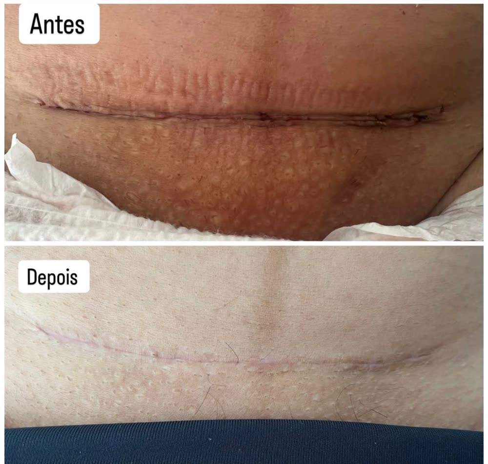
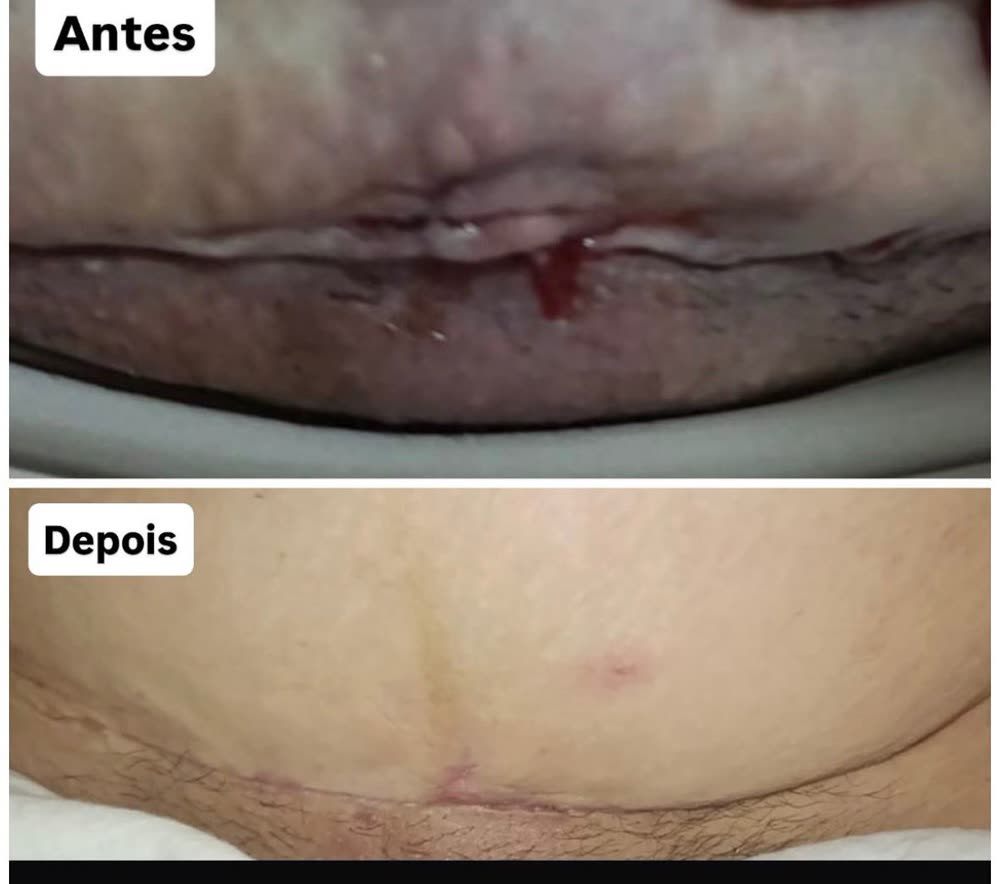
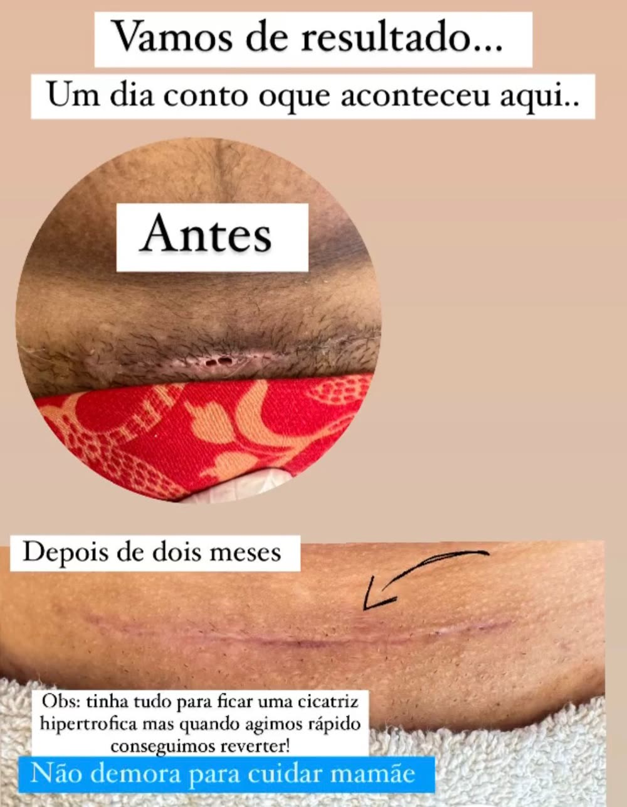
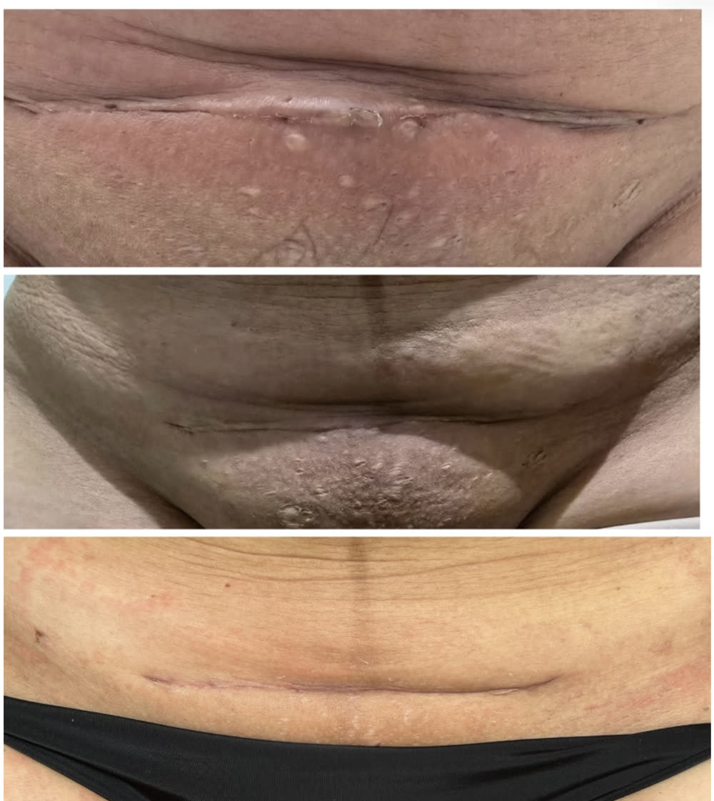
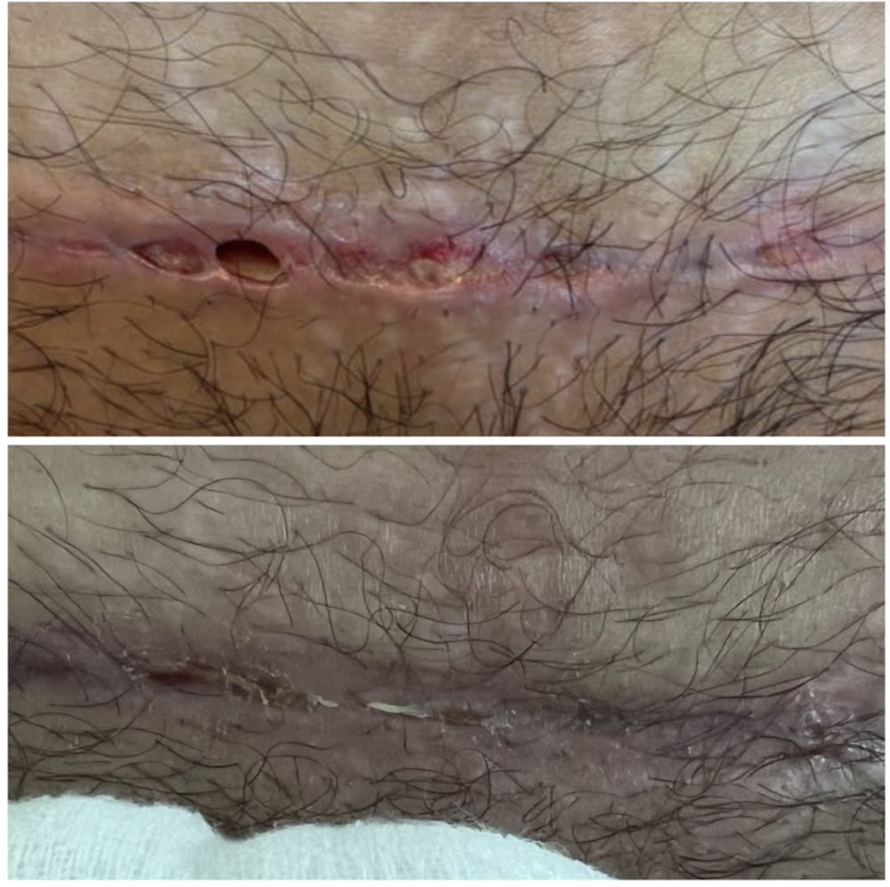
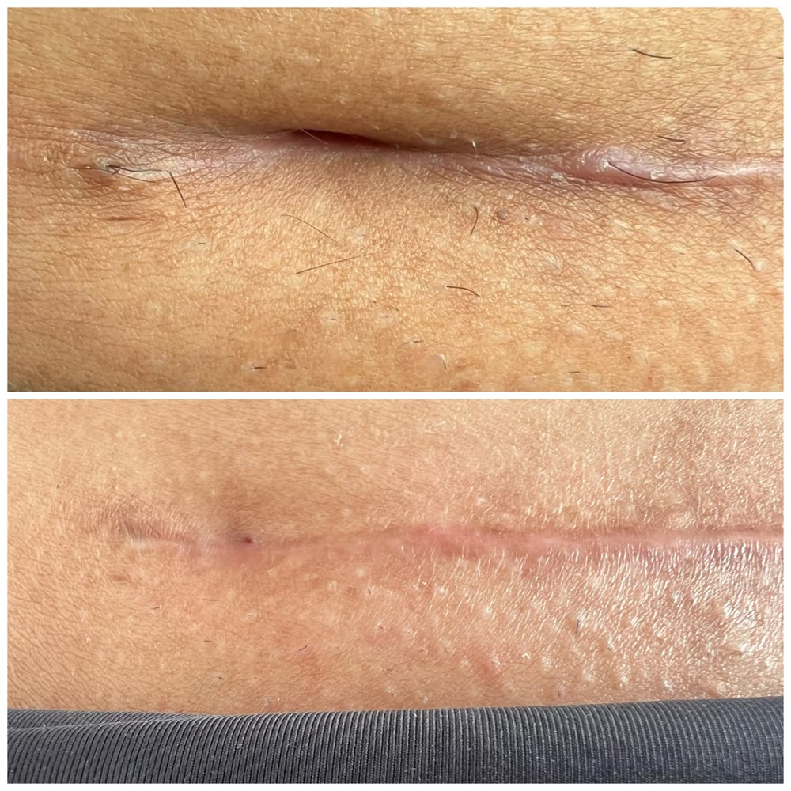
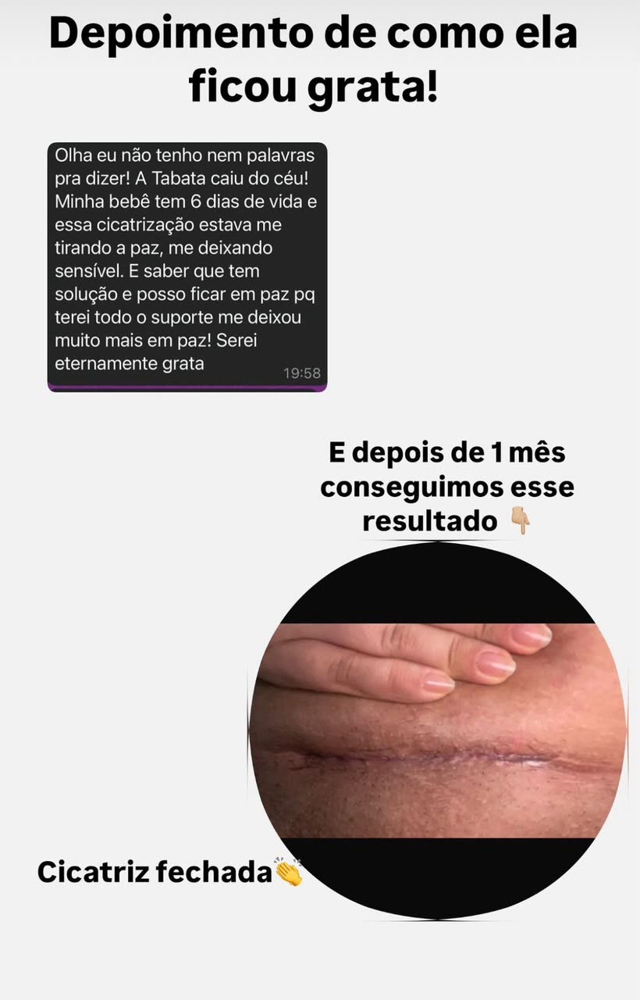

Talvez você já tenha procurado massagens e exercícios na internet, mas continue com uma dúvida: “Será que isso serve para mim?” Aqui você recebe um passo a passo com direcionamento de uma fisioterapeuta, e uma avaliação individual antes de começar.
Quero começar minha recuperação








Os resultados variam de pessoa para pessoa.

Depois da cesárea, a internet está cheia de massagens para a cicatriz e exercícios para a barriga. O problema é que nenhum desses vídeos conhece você: o seu tempo de pós-parto, como está a sua cicatriz, o que você sente quando toca nela.
Sem direcionamento, a gente fica no meio do caminho: com medo de fazer errado, com medo de não fazer nada, e com a sensação de que o próprio corpo virou um território desconhecido.
O Método Cesárea Sem Limitações reúne um passo a passo para você entender o seu corpo e cuidar da sua recuperação com direcionamento, e começa por uma avaliação individual comigo.
Toque em cada frase que tem a ver com a sua vida hoje.
Essas dúvidas são muito comuns depois de uma cesárea. Com avaliação e direcionamento, você para de adivinhar e começa a cuidar de si com clareza.
Quero começar hojeQuando você entende o seu corpo, a recuperação deixa de ser um medo e passa a ser um cuidado.
Você aprende a tocar e cuidar da região da cicatriz sem medo.
Chega de juntar vídeos soltos: cada etapa tem um porquê.
Orientações para a região abdominal depois da cirurgia.
Avaliação e acompanhamento direto comigo pelo WhatsApp.
Olhar para a barriga e para a cicatriz com mais carinho e menos angústia.
Aulas que respeitam cada minuto do seu dia com o bebê.
Antes de iniciar as massagens, você passa pela minha avaliação pelo WhatsApp, para começar do jeito certo para o seu caso.
Massagens e exercícios organizados em sequência, com 1 ano de acesso para assistir quantas vezes quiser.
Durante 20 dias você tem meu acompanhamento para tirar dúvidas e ajustar o que for preciso.
Entre, assista às aulas e conheça o método. Se em 7 dias achar que não é para você, é só pedir e devolvemos 100% do valor, sem perguntas e sem burocracia.
Fisioterapeuta especialista em recuperação pós-parto. Já ajudou mais de 10 mil mães no Brasil e no exterior a se recuperarem depois do parto.
“Eu sei que cada minuto da sua rotina vale muito. Quero ajudar você a usar esse tempo com mais clareza sobre como cuidar de si.”
Criei o Método Cesárea Sem Limitações para reunir, em um só lugar, o passo a passo que eu gostaria que toda mãe recebesse depois da cesárea: entender o próprio corpo e cuidar da recuperação com direcionamento, e não no escuro.
Seguir procurando vídeos, evitando olhar para a cicatriz e se perguntando, todo dia, se aquilo serve para você.
Passar pela avaliação, seguir um passo a passo feito para o pós-cesárea e ter uma fisioterapeuta ao seu lado por 20 dias.
Logo após a confirmação do pagamento, você recebe os dados de acesso no e-mail cadastrado. O acesso é feito pela plataforma da Hotmart.
1 ano de acesso às aulas, no celular ou no computador, quantas vezes quiser.
Depois da compra, você faz uma avaliação comigo pelo WhatsApp. Ela acontece antes de você iniciar as massagens, para que você comece do jeito certo para o seu caso.
São 20 dias em que você pode contar comigo para tirar dúvidas e receber orientação enquanto segue as aulas.
A avaliação individual existe justamente para entender o seu momento, seja a cesárea recente ou de anos atrás, e orientar como você deve seguir o método.
Depois da liberação do seu médico. Na avaliação, eu oriento o que é indicado para a fase em que você está.
Pelas opções disponíveis no checkout da Hotmart, por R$ 297 à vista ou em até 12x no cartão.